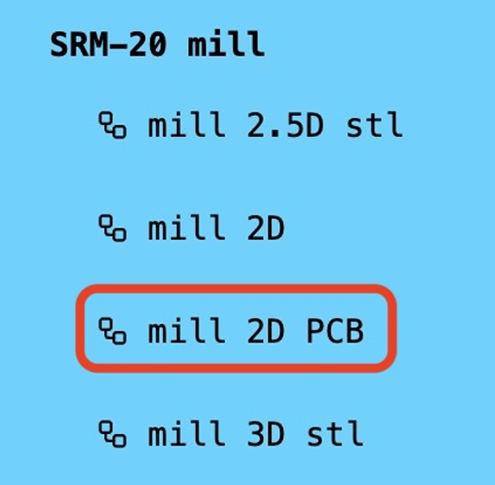
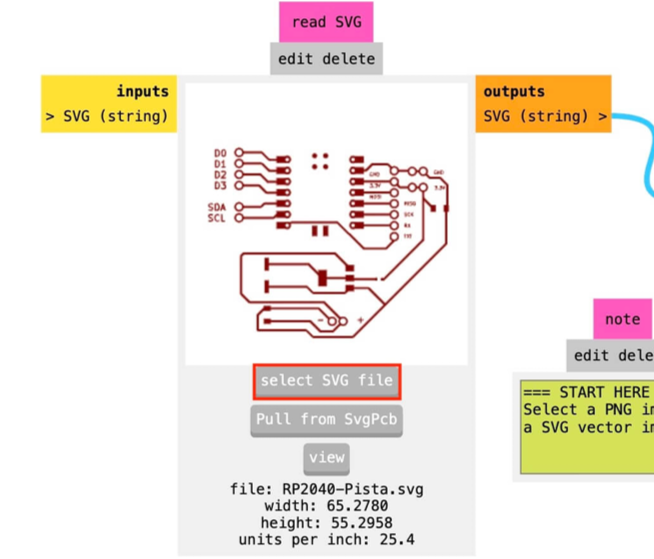
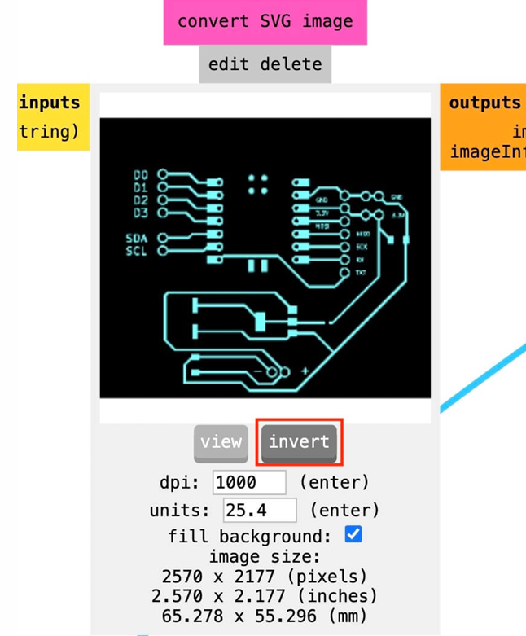
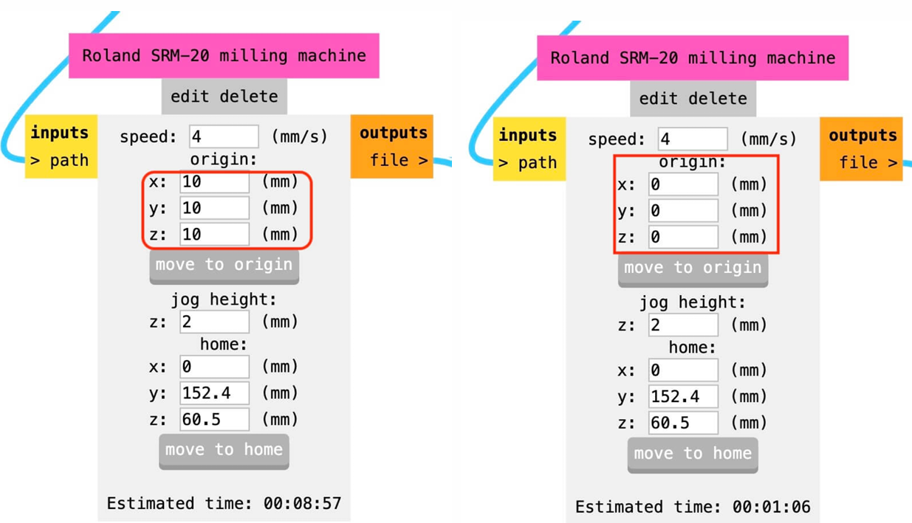
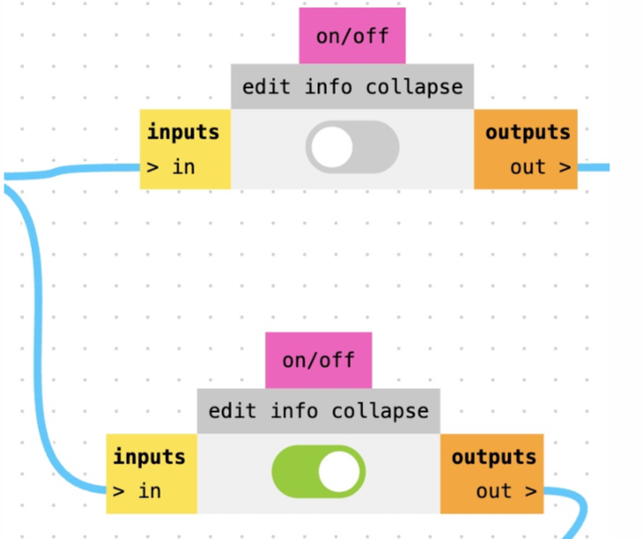

Esta pagina esta hecha con el proposito de la documentacion de trabajos y practicas de la materia de Produccion Electronica.
Registrar y organizar el seguimiento de la producción electrónica realizada en clase y los conocimientos adquiridos, evidenciando nuestro avance académico y el cumplimiento de las metas de la materia.
Aprender a usar el editor de esquemas para la fabricacion de placas.

Aprender a usar el editor de placas para mandar a cortar.

Aprender a usar la pagina web mods para modificar los archivos para la cortadora.

Aprender a calibrar la cortadora de placas Roland para cortar mi placa de cobre

Escoja una opcion.
Documentación de el uso de KiCad.
Se descargara el programa de KiCad para la fabricacion y diseño de circuitos en la siguiente pagina web KiCad, en la pagina web encontraras el boton de instalacion.

Va a seleccionar el sistema operativo de su preferencia y va a instalar KiCad.

Una vez con el programa KiCad instalado, se debe hacer la instalacion de la libreria llamada FabLab, debe entrar a el administrador de elementos y contenido de la siguiente manera, puede acceder de las siguientes 2 formas como se indica en la siguiente imagen.

Una vez en el administrador de elementos y contenido se instala la libreria FabLab. Una vez finalizado ya puedes iniciar a fabricar.

Documentación de fabricacion.
Para crear un nuevo proyecto se debe seleccionar el boton archivo ubicado arriba y la izquierda, despues se debe seleccionar el boton "Nuevo Proyecto" como se muestra en la siguiente imagen.

Una vez en el nuevo proyecto se debe seleccionar el default KiCad como se muestra en la imagen para empezar a fabricar nuestro proyecto.

Una vez estes en tu nuevo archivo en la barra lateral izquierda apareceran 2 archivos nuevos, el primero en _pcb y el otro en _sch para empezar a diseñar nuestra placa debemos abrir el editor de esquemas que es el archivo _sch o de una manera mas facil seleccionando el boton de editor de esquemas como se muestra en la siguiente imagen.

Una vez dentro del esquematico debemos agregar los componentes que necesitemos para la fabricacion de la Placa, gracias a la libreria FabLab tenemos todo lo necesario, para buscar un componente se puede oprimir la tecla "A" o en el boton indicado en la siguiente imagen.

Una vez abierto nuestro selector de componentes podemos buscar los componentes que ocupemos para nuestro trabajo buscando en la barra de busqueda ubicada en la parte superior izquierda, es importante que los componentes que escogamos tengan huella ya que sin huella nuestros componentes no serviran cuando cambiemos al editor de placas el ejemplo de la huella esta en la siguiente imagen.

Una vez que hayamos agregado todos los componentes necesarios, podemos proceder a la fabricación del circuito en el esquematico, tenemos 2 maneras de unir los componentes la primera es presionando la tecla "V" para usar dibujar cables o la segunda presionando el boton dibujar cables que se muestra en la siguiente imagen.

Una vez que hayamos terminado de dibujar los cables, podemos ejecutar el DRC para verificar que el diseño cumpla con las reglas de diseño, el boton de DRC se encuentra en la barra de herramientas superior central como se muestra en la imagen, tambien es conocido como "ERC" si su programa esta en español.

Una vez abierto el DRC debemos selecionar el boton que dice "Run DRC" o "Ejecutar ERC", nos mostrara los errores que tengamos en nuestro diseño, si no hay errores nos mostrara un mensaje de que no hay errores y podemos continuar con la fabricación de la placa.

Cuando nuestros diseños del esquematico estén listos, podemos pasar al editor de placas, para pasar al editor de placas tenemos un boton llamado cambiar al editor de placas en la barra de herramientas superior central, el ultimo boton a la derecha en la siguiente imagen se muestra con exactitud el boton.

Para poder pasar nuestro circuito al editor de placas, debemos extraer la placa desde el esquematico, para ello utilizamos el boton "Extraer placa" o "Update Board" en la barra de herramientas superior central, indicado en la siguiente imagen.

Una vez seleccionado el botón nos aparecerá la siguiente ventana, si su placa no marca errores podemos actualizar la placa desde el esquematico pulsando el boton de actualizar placa como se muestra en la siguiente imagen.

Documentación del uso de Mods.
Abrir el programa de Mods y seleccionar el programa correspondiente a la máquina de fabricación.

Seleccionar el archivo exportado desde KiCad. Mantener identificados por separado los archivos de pistas, etiquetas, perforaciones y contorno.

Revisar la vista previa del archivo. Si las pistas o etiquetas aparecen invertidas, utilizar la opción de Invert indicada en Mods. Comprobar nuevamente la vista previa antes de continuar.

Seleccionar el tipo de cortador correspondiente. Revisar los parámetros mostrados por Mods. Comparar el resultado de la vista previa con el diseño original.

Configurar el origen del archivo. Comprobar que la posición del diseño coincida con la orientación esperada.

Guardar los archivos.
